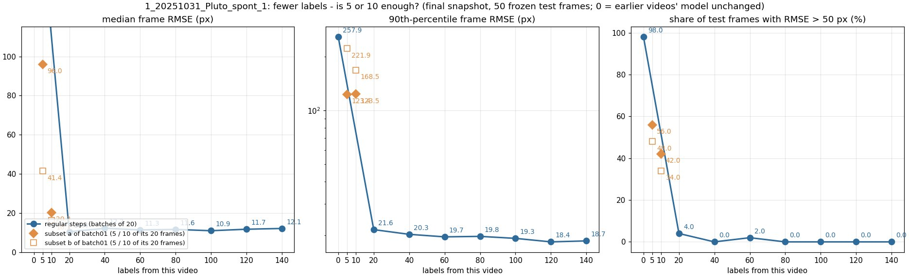
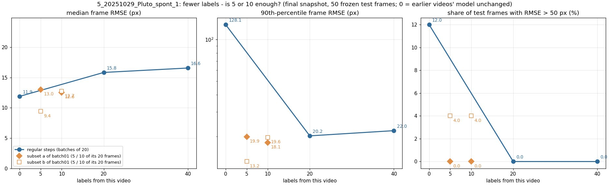
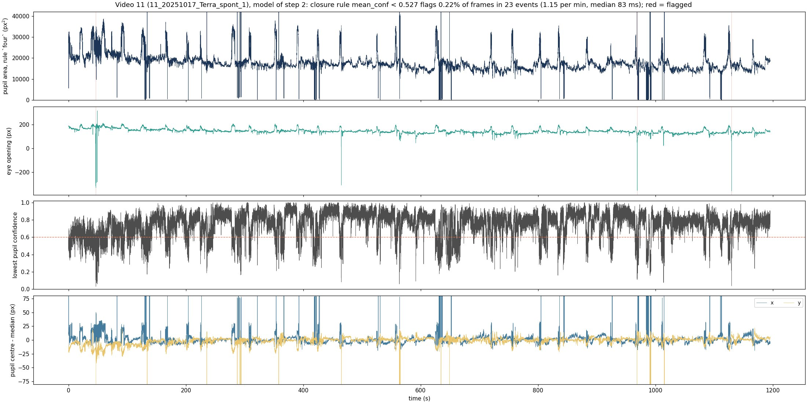

Task: DeepLabCut finds 8 points on every frame of a mouse-eye video: pupil top, bottom, left, right; upper and lower eyelid; nasal and temporal eye corner. From these we get pupil size, eye opening and blinks, to be aligned with brain recordings later.
Main question: On a new video, how many frames must a person label before the model is good enough?
The work has two phases, separated by the day the keypoint definitions were made explicit (2026-09-20). Phase 1 used the earlier definitions; only three choices that do not depend on the definitions are kept from it: batch size, model and error-correction algorithm. All other conclusions come from phase 2, which starts again from the same 5-minute video under the explicit definitions. Error numbers of the two phases cannot be compared directly.
Conclusions of phase 1 (steps 1–3)
Premise: pupil top is placed at the highest point of the visible pupil, the part not hidden by the eyelid.
Which batch size? 2, chosen by the internal validation loss; on the test set the four batch sizes differ little (step 1).
Which model? ResNet-50 (step 2).
Which error-correction algorithm picks the frames to label next? jump. The three algorithms show no clear gap; jump is slightly ahead (step 3).
The logic in between: why ResNet-50 and batch 2 were kept after the standard changed
On 2026-09-20 the placement of each of the 8 points was made explicit (point-by-point comparison in step 4). Three things changed: pupil top moved from "the highest point of the visible pupil" to "the true top of the pupil ellipse", about 50 px higher; pupil left and right moved from "the leftmost and rightmost visible points of the pupil" to the two ends of the horizontal axis of the ellipse; and the two corners moved from the inner side of the shadow and of the reflections to the outer side, 40–50 px outwards each. The definitions of pupil bottom and of the two eyelid points did not change. The images, the task and the training procedure did not change. The choice of batch size and model depends on the images and the training procedure, not on where the points are placed, so we consider both choices unaffected and keep ResNet-50 with batch 2. This is a judgment; batch size and model were not compared again under the explicit definitions. The three choices of phase 1 were themselves made under one set of definitions: all training and test frames of that video were labeled in the same way at the time (checked in step 4), so the comparisons between batch sizes, between models and between error-correction algorithms are fair.
Conclusions of phase 2 (steps 4–8)
Premise: the pupil is treated as an ellipse and pupil top is placed at the true top of that ellipse; where the eyelid hides it, the labeler estimates its position from the ellipse.
How many labels are enough within one video? It saturates within about 80 labels: the same 5-minute video, relabeled under the keypoint definitions made explicit on 2026-09-20 and redone, gives 12.9 / 13.0 / 12.0 / 13.1 / 12.3 px at 20 / 40 / 60 / 80 / 100 labels, with no decrease; and no later video has a plateau point above 80 labels (step 5). In phase 1 the same video showed no decrease from 80 to 300 labels either (step 3).
What about a new mouse? It needs its own labels, and 20 of them reach about 10 px. Second mouse (the model had seen one mouse): 208 px at 0 labels, 10.4 px at 20. Third mouse (the model had seen two mice): 26 px at 0 labels, 9.2 px at 20. The second time the mouse changed, the starting error without any labels was far smaller (step 5).
How many labels does each later video of the same mouse need? 0–40 reach the plateau; 1 of the 9 finished ones needed 80 (step 5).
Would a first batch of 5 or 10 labels be enough? On some videos yes, on others no, and this cannot be told in advance; 20 is the most stable. What is compared is the size of the first batch (5 or 10 taken out of the 20 already labeled), not a procedure of 5 labels per step (step 6).
Do new videos make old ones worse? No (step 7).
How to compute the pupil area? Under the definitions made explicit on 2026-09-20 all four pupil points are ellipse endpoints, and on the 594 test frames of 12 videos the four-point area has a median error of 6.6% against 8.3% for the three-point rule; on videos 4 and 8 the area is still not accurate (step 8).
How to find the frames in which the pupil cannot be seen? Mean confidence of the four pupil points below 0.527: 27 of the 28 frames in which the labeler left all four pupil points empty are found, and 4.1% of the frames with all four labeled are flagged; the earlier rule flags 55.7%. An empty frame is not the same as a blink; blinks have no definition or truth yet (step 8).
Each video has a set of human-labeled test frames that are never used for training or for any choice. For every test frame the model gives the coordinates of the 8 points, in pixels of the original video frame (928 × 736, no rescaling). Every predicted point enters the calculation, none is dropped for low confidence; points the person did not label (for example the pupil points of a closed-eye frame) are left out.
Error of one point: for point k of frame i, with prediction and human label , the error is the straight-line distance between the two:
Median frame RMSE (the main metric from step 3 on): first the root mean square of the point errors within each frame, where is the number of labeled points in that frame (at most 8); then the median of over all test frames.
RMSE over all keypoints (used in steps 1 and 2): one root mean square over the errors of all points of all test frames, where N is the total number of labeled points (100 frames × 8 points, at most 800). A few points that are far off pull it up, which is why the median frame RMSE was used later.
The other numbers: "90th percentile" is the 90th percentile of ; "test frames above 50 px" is the share of frames with > 50; "points with confidence ≥ 0.6" is the share of labeled points whose model confidence is at least 0.6.
Lower is better. For scale: the eye is about 320–390 px wide, so 10 px is about 3% of the eye width. The scoring scripts are in the repository: v1_old_pupil_top/batch-size-selection/scripts/evaluate_eye_test_set.py and the script of the same name under model-selection/scripts/ for steps 1 and 2, active-learning-jump-selection/scripts/round_train_pipeline.py for step 3, and v2_new_pupil_top_video_scaling/scripts/scale_step.py from step 5 on; every score is written to the csv tables of the results/ folders. The video, data, model and metric of every step are listed in the "Basic information" table at its start.
Training recipe (chosen in steps 1 and 2, used in both phases): ResNet-50, batch 2. Every model is trained anew from ImageNet-pretrained weights; it never continues from one of our earlier models.
1选 batch size：batch 2Batch size: batch 2
基本信息Basic information
视频Video
第一只老鼠的 5 分钟眼睛视频（60 帧/秒，共 18,000 帧）。前 4 分钟用于挑帧和训练，最后 1 分钟只用于测试。The 5-minute eye video of the first mouse (60 fps, 18,000 frames). The first 4 minutes are used for frame selection and training, the final minute for testing only.
标注标准Label standard
第一阶段（瞳孔上点标在看得见的瞳孔的最高处）。Phase 1 (pupil top at the highest point of the visible pupil).
训练数据Training data
前 4 分钟里人工标注的 100 帧：最初 20 帧按画面外观聚类（k-means）挑选，其余 80 帧按时间顺序补充。按时间先后排序，最早的 80 帧（0–33 秒）用于训练。100 hand-labeled frames from the first 4 minutes: the first 20 picked by clustering image appearance (k-means), the other 80 added in time order. Sorted by time, the earliest 80 (0–33 s) are the training set.
验证数据Validation data
同一批 100 帧里时间最晚的 20 帧（34–236 秒），与训练帧相隔 1.2 秒以上。用来选 batch size。The latest 20 of the same 100 frames (34–236 s), at least 1.2 s away from the training frames. Used to choose the batch size.
测试数据Test data
最后 1 分钟里按时间均匀取 100 帧，人工标注 8 个点。只用来报告成绩，不参与训练，也不参与任何选择。100 frames evenly spaced in time over the final minute, all 8 points labeled by hand. Used only to report the score, never for training or for any choice.
模型和配置Model and settings
HRNet-W32（当时使用的模型），从 ImageNet 预训练权重开始训练 100 轮，CPU；学习率在第 80、95 轮下降；每个 batch size 训练一次；取内部验证 mAP 最高的那次存档来打分。HRNet-W32 (the model in use at that time), trained for 100 epochs from ImageNet-pretrained weights on CPU; learning rate drops at epochs 80 and 95; one run per batch size; the snapshot with the best internal validation mAP is scored.
指标Metric
测试帧上全部关键点合在一起的 RMSE（像素），公式见页面开头“指标怎么算”的第 3 条（N 最多为 100 帧 × 8 点 = 800）。这一步和第 2 步当时用这个指标；图 1-2 同时给出中位帧 RMSE。RMSE over all keypoints of all test frames (pixels); the formula is item 3 of "How the metrics are computed" at the top (N is at most 100 frames × 8 points = 800). This step and step 2 used this metric at the time; Figure 1-2 also gives the median frame RMSE.
What was done:With the reviewed labels (first 80 frames train, last 20 validate), one run each at batch 2, 4, 8, 16 (100 epochs). The selection rule was fixed before looking at results: lowest internal validation loss. The final-minute test frames are report-only.
图 1-1 怎么看：右上：内部验证损失，batch 2 最低（星号）。左上：测试集误差，蓝线在 batch 2 也最低（21.07 px）。右下：把两者画在一起，batch 2 在左下角，两个信号一致。左下：置信度 ≥ 0.6 的点的比例，batch 越大越低。Figure 1-1, how to read:Top right: internal validation loss, lowest at batch 2 (star). Top left: test error, the blue line is also lowest at batch 2 (21.07 px). Bottom right: both together, batch 2 sits in the lower-left corner, so the two signals agree. Bottom left: share of points with confidence ≥ 0.6 falls as the batch grows.
图 1-2 怎么看：同样的四次训练，用两种指标打分（2026-10-04 补算，没有重新训练）。左：当时用的指标，全部关键点合在一起的 RMSE。中：后面各步用的指标，中位帧 RMSE，和左图用同一个纵轴刻度。右：帧 RMSE 超过 50 px 的测试帧所占比例。按中位帧 RMSE，四个 batch size 是 19.7 / 18.5 / 20.1 / 19.1 px，都在 18.5–20.1 px 之间，batch 4 最低。Figure 1-2, how to read:The same four runs scored with both metrics (added 2026-10-04, no retraining). Left: the metric used at the time, RMSE over all keypoints. Middle: the metric of the later steps, median frame RMSE, on the same y scale as the left panel. Right: share of test frames with frame RMSE above 50 px. By median frame RMSE the four batch sizes give 19.7 / 18.5 / 20.1 / 19.1 px, all between 18.5 and 20.1 px, with batch 4 the lowest.
Conclusion:Batch 2. The internal validation set and the independent test set pick the same batch, which shows the enlarged validation set can be trusted. One run per batch; the differences between batches are small (21.1–23.6 px). Re-scored with the metric of the later steps (median frame RMSE): the four batches lie between 18.5 and 20.1 px, batch 4 is the lowest (18.5 px) and batch 2 gives 19.7 px, 1.3 px apart; batch 4 and batch 8 each have 1–2 frames above 50 px, batch 2 has none. The selection rule is the internal validation loss and does not look at the test set, so the choice of batch 2 stands; but by median frame RMSE the test set does not show batch 2 as the best, and the four batches cannot really be told apart.
2选模型：ResNet-50Backbone: ResNet-50
基本信息Basic information
视频Video
第一只老鼠的 5 分钟眼睛视频（60 帧/秒，共 18,000 帧）。前 4 分钟用于挑帧和训练，最后 1 分钟只用于测试。The 5-minute eye video of the first mouse (60 fps, 18,000 frames). The first 4 minutes are used for frame selection and training, the final minute for testing only.
标注标准Label standard
第一阶段（瞳孔上点标在看得见的瞳孔的最高处）。Phase 1 (pupil top at the highest point of the visible pupil).
训练数据Training data
与第 1 步相同：最早的 80 帧训练。Same as step 1: the earliest 80 frames.
验证数据Validation data
与第 1 步相同：最晚的 20 帧。用来选模型。Same as step 1: the latest 20 frames. Used to choose the model.
测试数据Test data
最后 1 分钟里按时间均匀取 100 帧，人工标注 8 个点。只用来报告成绩，不参与训练，也不参与任何选择。100 frames evenly spaced in time over the final minute, all 8 points labeled by hand. Used only to report the score, never for training or for any choice.
模型和配置Model and settings
5 种模型（ResNet-50、HRNet-W18、HRNet-W32、HRNet-W48、CSPNeXt-S），batch 2，各训练 100 轮，CPU，其余设置与第 1 步相同，每种训练一次。Five models (ResNet-50, HRNet-W18, HRNet-W32, HRNet-W48, CSPNeXt-S), batch 2, 100 epochs each on CPU, other settings as in step 1, one run each.
指标Metric
与第 1 步相同：当时用全部关键点合在一起的 RMSE；图 2-2 同时给出中位帧 RMSE。Same as step 1: RMSE over all keypoints at the time; Figure 2-2 also gives the median frame RMSE.
What was done:Same data and settings (batch 2, 100 epochs), five backbones: ResNet-50, HRNet-W18 / W32 / W48, CSPNeXt-S.
图 2-1 怎么看：左上：测试集误差，ResNet-50 最低（20.1 px），HRNet-W32 接近（21.1 px）。右上：内部验证损失，5 个模型只差 1.4%，分不出高下。左下：置信度 ≥ 0.6 的点，ResNet-50 最多（800 个点里 514 个）。右下：训练时间对误差，ResNet-50 用时 1.7 小时，在左下角（误差低，用时短；只有误差高得多的 CSPNeXt-S 比它快）。Figure 2-1, how to read:Top left: test error, ResNet-50 lowest (20.1 px), HRNet-W32 close (21.1 px). Top right: internal validation loss, the five models differ by only 1.4% and cannot be separated. Bottom left: points with confidence ≥ 0.6, ResNet-50 has the most (514 of 800). Bottom right: training time vs error, ResNet-50 takes 1.7 h and sits in the lower-left corner (low error, short time; only CSPNeXt-S, with a much higher error, is faster).
图 2-2 怎么看：同样的五个模型，用两种指标打分（2026-10-04 补算，没有重新训练）。左：全部关键点合在一起的 RMSE，从 20.1 到 47.9 px，差别很大。中：中位帧 RMSE，同一个纵轴刻度，五个模型是 18.4 / 19.7 / 19.2 / 19.6 / 20.5 px，只差约 2 px。右：帧 RMSE 超过 50 px 的测试帧比例，HRNet-W18 有 15%，CSPNeXt-S 有 2%，ResNet-50 和 HRNet-W32 是 0。左图的差别主要来自右图里这些错得很远的帧。Figure 2-2, how to read:The same five models scored with both metrics (added 2026-10-04, no retraining). Left: RMSE over all keypoints, from 20.1 to 47.9 px, a large spread. Middle: median frame RMSE on the same y scale; the five models give 18.4 / 19.7 / 19.2 / 19.6 / 20.5 px, only about 2 px apart. Right: share of test frames with frame RMSE above 50 px: 15% for HRNet-W18, 2% for CSPNeXt-S, none for ResNet-50 and HRNet-W32. The spread in the left panel comes mainly from these far-off frames.
Conclusion:Taking everything together, ResNet-50. (1) Lowest test error: 20.1 px. (2) The validation losses of the five models are close, within 1.4%. (3) Best use of confidence: 514 of 800 points have confidence ≥ 0.6, against 75–375 for the other models; this helps when confidence is used later to detect blinks and tracking loss. (4) Low training cost: 1.7 h, against 3.7 h for HRNet-W32, the model with a similar error. All later experiments use ResNet-50 with batch 2. Re-scored with the median frame RMSE, ResNet-50 is still the lowest (18.4 px), but the five models are only about 2 px apart. The comparison of the two metrics shows that the RMSE over all keypoints is easily pulled up by a few far-off frames (the 47.9 px of HRNet-W18 come mainly from 15% of the frames); it reflects whether there are gross failures, not the error of a typical frame. This is why the median frame RMSE is the main metric from step 3 on, with the share of frames above 50 px reported separately.
第一只老鼠的 5 分钟眼睛视频（60 帧/秒，共 18,000 帧）。前 4 分钟用于挑帧和训练，最后 1 分钟只用于测试。The 5-minute eye video of the first mouse (60 fps, 18,000 frames). The first 4 minutes are used for frame selection and training, the final minute for testing only.
标注标准Label standard
第一阶段。Phase 1.
训练数据Training data
起点是第 1 步的 80 帧。每一轮：模型预测前 4 分钟的全部 14,400 帧，由找帧算法标出可疑帧，再按画面外观聚类从中挑 20 帧，人工改正全部 8 个点后加入训练集。三种算法各自独立累加，11 轮后每条线 300 帧。Starts from the 80 frames of step 1. Each round the model predicts all 14,400 frames of the first 4 minutes, the detector flags suspicious frames, 20 of them are picked by clustering image appearance, all 8 points are corrected by hand and the frames are added to the training set. The three detectors accumulate independently; after 11 rounds each branch has 300 frames.
验证数据Validation data
第 1 步的 20 帧，始终不变。The 20 frames of step 1, never changed.
测试数据Test data
最后 1 分钟里按时间均匀取 100 帧，人工标注 8 个点。只用来报告成绩，不参与训练，也不参与任何选择。100 frames evenly spaced in time over the final minute, all 8 points labeled by hand. Used only to report the score, never for training or for any choice.
模型和配置Model and settings
ResNet-50，batch 2，100 轮，学习率在第 80、95 轮下降，Apple 芯片 GPU（MPS）训练。每一轮都从 ImageNet 预训练权重重新训练。图中每个点是内部验证 mAP 最高的存档，只训练一次。ResNet-50, batch 2, 100 epochs, learning rate drops at epochs 80 and 95, trained on the Apple GPU (MPS). Every round is trained anew from ImageNet-pretrained weights. Each point in the figure is the snapshot with the best internal validation mAP, from a single run.
指标Metric
中位帧 RMSE：对每一帧算 8 个点的 RMSE，再取 100 帧的中位数。Median frame RMSE: the RMSE over the 8 points of each frame, then the median over the 100 frames.
What was done:The aim is to choose an error-correction algorithm: once a model is trained, an algorithm searches the video for frames where the model is probably wrong, a person corrects only those frames, and the model is retrained. This procedure is called active learning. Three algorithms were compared to see whose picks reduce the error most. Procedure: starting from 80 labels, each round the algorithm picks frames, a person corrects 20 of them, they are added and the model is retrained. Three detectors ran as three branches: low confidence (uncertain), keypoints jumping between consecutive frames (jump), deviation from a smooth trajectory (fitting). 11 rounds, each branch from 80 to 300 labels.
图 3-1 怎么看：横轴是累计训练帧数，三种颜色是三种算法。图中每一轮都用同一个公式计算。中间一幅是主要指标（中位帧 RMSE）：三条线一直在 15.7–17.5 px 之间上下波动，没有下降趋势；红线（jump）多数时候略低；注意这幅图的纵轴只跨 2 px。左边一幅是均值，会被几帧严重错误拉高（蓝线在 120–140 帧的尖峰就是几帧眨眼造成的）。Figure 3-1, how to read:x = cumulative training frames, the three colours are the three detectors. Every round in the figure is scored with the same formula. The middle panel is the primary metric (median frame RMSE): all three lines wander between 15.7 and 17.5 px with no downward trend; the red line (jump) is slightly lower most of the time; note that its y axis spans only 2 px. The left panel is the mean, which a few badly wrong frames pull up (the blue spike at 120–140 frames comes from a few blink frames).
Conclusion:This step has two conclusions: jump is chosen as the error-correction algorithm, and on this video about 80 labels saturate.
jump is the error-correction algorithm and picks the frames in all later experiments. In this experiment jump has the lowest error: the mean of the median error over the 11 rounds is 16.4 px for jump, 17.0 px for uncertain and 17.0 px for fitting, and jump is the lowest in 8 of the 11 rounds. The lead is about 0.6 px, smaller than the variation when one setting is trained again (0.3–2 px), so we regard the three error-correction algorithms as close, with jump slightly ahead.
On this video about 80 labels saturate. From 80 to 300 labels the median error of all three branches stays between 15.7 and 17.5 px, with no decrease.
This result uses the keypoint definitions from before 2026-09-20.
After the definitions were made explicit on 2026-09-20, the same video was relabeled and the experiment repeated, with the same conclusion: the error stays between 12 and 13 px at 20, 40, 60, 80 and 100 labels and does not fall with the number of labels (step 5, video 0). What was made explicit is described in step 4; mainly, pupil top moved from "the highest point of the visible pupil" to "the true top of the pupil ellipse", and the two corners became the crossing of the continued eyelid margins.
The error values under the two sets of definitions cannot be compared directly; what agrees is that the video saturates within about 80 labels.
4点位定义的明确（2026 年 9 月 20 日起）：瞳孔按椭圆标，眼角取睑缘延长线的交点Keypoint definitions made explicit (from 2026-09-20): pupil as an ellipse, corners at the crossing of the eyelid margins
What was done:Where each of the 8 points is placed was written down, and all earlier videos were relabeled accordingly. From this step on every model and number uses these definitions. The full definitions, example figures and the common mistakes are in the folder keypoint_definitions/ of the repository. The points are described one group at a time below, each followed by its figure.
图 4-1怎么看：三只老鼠各一帧人工标注。红点是瞳孔的四个点，红线是过这四个点的椭圆；青色点是上下眼睑和两个眼角。图像为了看清做了提亮。 来源：左，第一只老鼠，视频 0（0_first5minvedio），第 15001 帧；中，Pluto，视频 1（1_20251031_Pluto_spont_1），第 68086 帧；右，Terra，视频 11（11_20251017_Terra_spont_1），第 68086 帧。都取自各视频的测试集，点是人工标注。Fig. 4-1.How to read:One human-labeled frame of each of the three mice. Red dots are the four pupil points and the red line is the ellipse through them; cyan dots are the two eyelid points and the two corners. The frames are brightened for display. Source: left, first mouse, video 0 (0_first5minvedio), frame 15001; middle, Pluto, video 1 (1_20251031_Pluto_spont_1), frame 68086; right, Terra, video 11 (11_20251017_Terra_spont_1), frame 68086. All from the test set of the video; the points are human labels.
Pupil top, bottom, left, right (Fig. 4-2): the pupil is treated as an ellipse and the four points are the ends of its two axes. Parts hidden by the upper eyelid or by fur are completed with the ellipse, so the pupil-top point often lies above the upper-eyelid point, that is, at a position covered by the lid. In Fig. 4-2 the red dots are the present positions; the yellow crosses are the positions before 2026-09-20: at the topmost, bottommost, leftmost and rightmost visible points of the pupil, without fitting an ellipse. The pupil boundary is the outer edge of the darkened region; where the edge looks doubled the left contour is used (2026-09-26); the brighter band around the dark core counts as pupil (2026-09-29).
图 4-2怎么看：瞳孔四个点怎么来。红色椭圆盖住整个瞳孔，红色虚线是它的两条轴，四个点是轴的端点。黄色叉和黄色虚线是 2026 年 9 月 20 日之前的标法：当时没有刻意按椭圆去拟合，四个点标在看得见的瞳孔最靠上、最靠下、最靠左、最靠右的位置，所以四个点不一定是椭圆的端点，也不一定落在椭圆的两条轴线上。 来源：三幅都是 Pluto，视频 1（1_20251031_Pluto_spont_1），从左到右是第 20855、5160、4835 帧，取自第一批训练帧。红点是按 2026 年 9 月 20 日明确的定义重新标注的位置，黄色叉是同一帧在此之前的标注。Fig. 4-2.How to read:How the four pupil points are obtained. The red ellipse covers the whole pupil, the dashed red lines are its two axes, and the four points are the ends of the axes. Yellow crosses and the dashed yellow outline show the placement before 2026-09-20: no ellipse was fitted on purpose and the four points were placed at the topmost, bottommost, leftmost and rightmost visible points of the pupil, so they are not necessarily the ends of an ellipse and do not necessarily lie on its two axes. Source: all three panels are Pluto, video 1 (1_20251031_Pluto_spont_1), frames 20855, 5160 and 4835 from left to right, taken from the first training batch. Red dots are the labels made under the definitions of 2026-09-20, yellow crosses the labels of the same frames before that.
Upper and lower eyelid (Fig. 4-1 above): the line between the eyelid skin and the eyeball is the eyelid margin. The upper-eyelid point is the midpoint of the upper margin, the lower-eyelid point the midpoint of the lower margin.
Left corner (nasal, medial canthus; Fig. 4-3, second row): there is a shadow at this corner; it gets narrower downwards and continues to near the lower eyelid. The outer border of the shadow is taken as the lower-left margin (solid red); it and the upper margin are each continued (dashed red), and the crossing of the two continuations (red circle) is the left corner; the cyan dot is the labeled position. Not used (dotted yellow line and yellow cross): following the inner border of the shadow, which puts the crossing inside the shadow. The hatched area is the shadow between the two constructions.
Right corner (temporal, lateral canthus; Fig. 4-3, third row): there are several bright reflections on this side, with a stretch of shadow below them. The lower margin is continued upwards along the outer line (dashed red), around the right of the reflections, and the point where it meets the upper margin (red circle) is the right corner; the cyan dot is the labeled position. Why the outer side: in the discussion with Kaiwen on 2026-09-20 we concluded that fur does not reflect, so the bright reflections on the right are still inside the eye and the corner must lie outside them. Not used (dotted yellow line and yellow cross): following the inner edge of the reflection and of the shadow below it, which puts the crossing on the inner line next to the reflection. The corner is not placed on a reflection either.
图 4-3怎么看：两个眼角怎么来，画法照 2026 年 9 月 20 日讨论时的手绘图。三行分别是整只眼睛、左眼角、右眼角；每一行左边是没有任何线的原图，右边是同一张图加上作图线。红色实线是沿图像描出的睑缘，红色虚线是它的延长线，红圈是交点，也就是眼角，青色点是标注的位置。黄色点线和黄色叉是讨论时比较过、最后不取的画法：左眼角沿阴影内侧的边，右眼角沿反光内沿和它下面阴影的内边缘，两条黄线都一直画到接近下眼睑点。斜线区域是左眼角处的阴影。 来源：三行都是第一只老鼠，视频 0（0_first5minvedio），第 15001 帧，取自测试集。青色点是人工标注；红线、黄线是对着图像画的作图线。Fig. 4-3.How to read:How the two corners are obtained, drawn after the hand sketch used in the discussion of 2026-09-20. The three rows are the whole eye, the left corner and the right corner; in each row the left image is the frame without any line and the right image is the same frame with the construction. Solid red = eyelid margin traced on the image, dashed red = its continuation, red circle = the crossing, which is the corner, cyan = the labeled point. Dotted yellow lines and yellow crosses show the construction that was compared in the discussion and not adopted: along the inner border of the shadow at the left corner, and along the inner edge of the reflection and of the shadow below it at the right corner; both yellow lines run down to near the lower-eyelid point. The hatched area is the shadow at the left corner. Source: all three rows are the first mouse, video 0 (0_first5minvedio), frame 15001, from the test set. Cyan dots are human labels; the red and yellow lines are construction lines drawn on the image.
看不清的点：所有 8 个点都一样，看得清楚就标；不能准确判断位置时，这个点留空不标。
Points that cannot be seen: the same for all 8 points: a point is labeled when it can be seen clearly and left empty when its position cannot be judged accurately.
之前的定义和现在的定义，逐点对照Earlier and present definitions, point by point
Where the numbers come from: all are comparisons between human labels; no model is involved. Two comparisons are used.
Position (column "median coordinates"): two sets of human-labeled test frames from the final minute of the same video (the 5-minute video of the first mouse): 100 frames labeled before 2026-09-20 and the present 50 frames. Camera and eye position did not change, so the median coordinates of a point over each set show where that point was placed. Coordinates are pixels of the original frame, x to the right, y downwards.
Shift on the same frame (last column): where a frame has two versions of labels, the distance between the two is taken and then the median over the frames. The four pupil points use 40 frames of the Pluto 2025-10-31 video (earlier labels vs the labels redone as an ellipse). The corners and eyelids use 90 frames of the 5-minute video of the first mouse (test set 50, validation set 20, first batch 20), with the two versions of labels: corners on the inner side and on the outer side.
点point
2026 年 9 月 20 日之前的定义definition before 2026-09-20
现在的定义present definition
中位坐标：之前 → 现在median coordinates: before → now
同一帧上的位移中位数median shift on the same frame
瞳孔上点pupil top
看得见的瞳孔的最高处，停在眼睑边上；在上眼睑点下方约 25 pxhighest point of the visible pupil, stopping at the eyelid; about 25 px below the upper-eyelid point
瞳孔椭圆的顶端，被挡住时按椭圆估计；在上眼睑点上方约 11 pxtop of the pupil ellipse, estimated from the ellipse where hidden; about 11 px above the upper-eyelid point
y 368 → 319（上移 49 px） (49 px up)
52 px
瞳孔左点、右点pupil left, right
看得见的瞳孔最靠左、最靠右的位置，没有按椭圆拟合；左点比右点高约 37 pxleftmost and rightmost visible points of the pupil, no ellipse fitted; left about 37 px higher than right
椭圆横轴的两个端点；左右两点等高（相差 0 px）the two ends of the horizontal axis of the ellipse; left and right at the same height (0 px apart)
左left y 425 → 447，右, right y 462 → 448
约 14 pxabout 14 px
瞳孔下点pupil bottom
看得见的瞳孔的最低处lowest point of the visible pupil
椭圆的底端（下缘一般看得见，位置基本不变）bottom of the ellipse (the lower edge is usually visible, so the position hardly changes)
y 585 → 586
约 14 pxabout 14 px
左眼角left (nasal) corner
阴影的内侧inner side of the shadow
阴影的外侧：两条睑缘延长线的交点。原因：讨论后认为这片阴影是毛发遮挡造成的，眼角在阴影外侧更合理outer side of the shadow: crossing of the two continued eyelid margins. Reason: after the discussion the shadow was attributed to fur covering the eye, so the corner is more plausibly on its outer side
x 410 → 370（外移 40 px） (40 px outwards)
40 px
右眼角right (temporal) corner
反光区域的内侧inner side of the reflections
反光区域的外侧：下睑缘沿外层线向上延伸与上睑缘的交点。原因：皮毛不会反光，反光亮带仍在眼睛内部outer side of the reflections: where the lower margin, continued upwards along the outer line, meets the upper margin. Reason: fur does not reflect, so the reflections are still inside the eye
x 808 → 857（外移 49 px） (49 px outwards)
56 px
上眼睑点upper eyelid
上睑缘弧线的中点midpoint of the upper eyelid margin
定义不变；眼角外移后位置略向上same definition; slightly higher after the corners moved
Were the earlier definitions applied consistently: yes. All human labels made on this video before 2026-09-20 follow one placement; the check per label set is below (keypoint_definitions/results/definition_by_label_set.csv, script scripts/definition_check.py):
标注集label set
帧数frames
左眼角 xleft corner x
右眼角 xright corner x
瞳孔上点在上眼睑点上方 (px)pupil top above upper-eyelid point (px)
瞳孔左点比右点高 (px)pupil left higher than right (px)
之前：训练帧（第 1、2 步用）before: training frames (steps 1, 2)
每个数是该标注集里所有帧的中位数。负数表示瞳孔上点在上眼睑点的下方。之前的五组标注彼此一致（左眼角 x 404–419，右眼角 x 795–808，瞳孔上点在上眼睑点下方 25–27 px），和现在的标法明显不同。
Each number is the median over the frames of the label set. A negative value means pupil top lies below the upper-eyelid point. The five earlier label sets agree with one another (left corner x 404–419, right corner x 795–808, pupil top 25–27 px below the upper-eyelid point) and differ clearly from the present placement.
Conclusion:The largest changes are pupil top and the two corners: the top point moved from the highest visible point to the top of the ellipse, and the corners from the inner to the outer side. Pupil left and right became the ends of the horizontal axis of the ellipse; pupil bottom and the two eyelid points keep their definitions. The earlier definitions were used consistently in steps 1–3, the present ones are used consistently from step 5 on. The four eyelid and corner points only serve to detect blinks, so a stable position that can be found in every frame is preferred. Model and batch size are carried over from steps 1 and 2 (ResNet-50, batch 2): where the points are placed changed, the images and the training procedure did not, so they were not compared again. Error numbers of steps 1–3 cannot be compared directly with those from step 5 on.
5主线：每个新视频要标多少帧Main line: labels needed per new video
基本信息Basic information
视频Video
视频 0：第一只老鼠的 5 分钟视频。视频 1–10：Pluto 的 19.9 分钟视频，其中视频 1、2、3 是同一天（2025-10-31）的三段，视频 4–10 每个录制日一段。视频 11 起：Terra 的 19.9 分钟视频，每个录制日一段。都是 60 帧/秒。Video 0: the 5-minute video of the first mouse. Videos 1–10: 19.9-minute videos of Pluto; videos 1, 2, 3 are three recordings of the same day (2025-10-31), videos 4–10 one per recording day. From video 11: 19.9-minute videos of Terra, one per recording day. All at 60 fps.
标注标准Label standard
第二阶段（第 4 步的定义）。Phase 2 (the definitions of step 4).
训练数据Training data
之前各视频带入的标注（见下表）加上这个视频自己的标注。自己的标注从视频前 80% 里挑：第一批 20 帧按画面外观聚类，之后每批 20 帧从跳动大的帧里聚类；每批先由模型预标，人再逐帧改正。The labels carried from earlier videos (table below) plus this video's own labels. Its own labels are picked from the first 80% of the video: the first 20 by clustering image appearance, each later batch of 20 by clustering among the frames with large jumps; the model pre-labels each batch and a person corrects every frame.
验证数据Validation data
视频第 80%–90% 的部分里取 20 帧，与前后各隔 2 秒。20 frames from the part between 80% and 90% of the video, with 2-second guards on both sides.
测试数据Test data
视频最后 10% 里按时间均匀取 50 帧，人工标注后冻结。只用来报告成绩。50 frames evenly spaced in time over the final 10% of the video, labeled by hand and frozen. Used only to report the score.
模型和配置Model and settings
ResNet-50，batch 2，120 轮，学习率在第 96、114 轮下降，MPS 训练，CPU 打分。每一步都从 ImageNet 预训练权重重新训练，只训练一次。成绩取最后一轮（第 120 轮）的存档。ResNet-50, batch 2, 120 epochs, learning rate drops at epochs 96 and 114, trained on MPS, scored on CPU. Every step is trained anew from ImageNet-pretrained weights, a single run. The final snapshot (epoch 120) is scored.
指标Metric
该视频 50 帧测试帧上的中位帧 RMSE（8 个点）。Median frame RMSE (8 points) on the 50 test frames of that video.
What was done:Videos are added one at a time, in this order.
Video 0: the 5-minute video of the first mouse.
Videos 1, 2, 3: the second mouse, Pluto; three recordings of the same day (2025-10-31), 19.9 minutes each.
Videos 4–10: Pluto, one recording per recording day, from the most recent backwards: 10-30, 10-29, 10-28, 10-27, 10-24, 10-23, 10-22 (there is no video of 10-26 or 10-25 in our set).
From video 11: the third mouse, Terra, one recording per recording day, from the most recent backwards: video 11 is 2025-10-17, video 12 is 10-16, then 10-15, 10-14, 10-13, 10-10, 10-09, 10-08 (videos 13–18, not done yet).
Every video follows the same steps:
50 frames evenly spaced over the final 10% of the video become the test set; they are labeled and frozen.
The previous model is applied unchanged to get the "0 labels" error.
Each step adds 20 labels of this video (picked as shown in Figure 5-1; the model pre-labels each batch and a person corrects every frame), retrains together with the labels carried from earlier videos, and scores on the test set.
Plateau rule: stop when two consecutive steps each fail to improve the best error by more than 3%. The plateau point is the last step that did improve it. When the rule fires, a person confirms whether the video is finished. So far all 12 videos stopped when the rule fired, so all of them meet the definition of the plateau; for 11 of them the plateau point is the step the rule gives, and only for video 5 was the plateau point given further consideration. On video 5 the median error at 20 labels (15.85 px) and at 40 labels (16.58 px) is no better than at 0 labels (11.90 px), so the rule fired at 40; this meets the definition of the plateau, and by the rule the plateau point is 0 labels. But we took into account that the 0-label model is off by more than 50 px on 6 of the 50 test frames (12%), which are gross errors; with 20 labels there are 0 such frames, so all gross errors are removed; with 40 labels there are still 0, so the effect holds and nothing further is gained. The plateau point is therefore taken as 20 labels, and these 20 labels are what later videos carry.
The next video starts, carrying only this video's labels up to the plateau point (not every frame labeled on this video goes into the training of later videos: frames labeled after the plateau point are left out). This mirrors real use, where labeling stops at the plateau.
图 5-1 怎么看：一批 20 帧是怎么挑出来的。每个视频各一张（它的第 2 批，也就是第一次由 jump 规则挑的那一批），排成一行，可以左右拖动；每张图下面注明视频。每张图的读法相同：最下面一行：模型预测整段视频后，每一帧里关键点相对上一帧的最大跳动；红色虚线是阈值（眼宽的 3%），超过阈值的帧是候选，这就是 jump 规则。最上面：候选帧按画面外观聚成 20 类，每类挑一帧（星号）。中间各行：这 20 帧（竖线）在时间上分散在整段视频里。每个视频的第一批没有模型可用，直接对全部帧按画面外观聚类挑 20 帧。Figure 5-1, how to read:How one batch of 20 frames is chosen. One sheet per video (its batch 2, the first batch picked by the jump rule) in one row; scroll sideways; the video is named under each sheet. Every sheet reads the same way: Bottom row: after the model has predicted the whole video, the largest jump of a keypoint from the previous frame; the red dashed line is the threshold (3% of the eye width), frames above it are candidates; this is the jump rule. Top: the candidates are clustered into 20 groups by image appearance and one frame is taken from each (stars). Rows in between: the 20 picks (vertical lines) are spread over the whole video. The first batch of a video has no model to use, so 20 frames are picked by clustering the appearance of all frames.
图 5-2 怎么看：左图：每个视频到平台时用了多少帧自己的标注。视频 0 用了 60 帧，视频 1（新老鼠的第一个视频）20 帧，之后大多是 20 帧，视频 7 是 0 帧，视频 9 是 80 帧；斜线柱是还在进行中的视频。右图：灰色虚线是 0 帧时的误差（上一个模型直接用），红线是到平台时的误差。两条线之间的距离就是这个视频自己的标注带来的改善。视频 1 的 0 帧误差是 208 px（超出图的范围），因为换了老鼠。Figure 5-2, how to read:Left: how many of its own labels each video used at its plateau. Video 0 used 60, video 1 (first video of the new mouse) 20, most later videos 20, video 7 none, video 9 80; the hatched bar is the video still in progress. Right: the grey dashed line is the error at 0 labels (previous model unchanged), the red line the error at the plateau. The gap between them is what the video's own labels bought. Video 1 starts at 208 px (off scale) because the mouse changed.
视频 0（mouse A，5-min）：平台点 60 帧，12.04 pxVideo 0 (mouse A, 5-min): plateau at 60 labels, 12.04 px
图 5-3 怎么看：每个视频自己的曲线排成一行，从视频 0 到最新的视频，可以左右拖动；每张图下面注明视频、老鼠、日期和平台点。三幅小图的读法以视频 9 为例。左图：横轴是这个视频自己的标注帧数，纵轴是误差；20 帧 10.4 px，40 帧 8.6 px，80 帧 8.2 px，之后两步（9.4、8.6 px）都没有再改善，规则在 120 帧触发，平台点记为 80 帧。中图：8 个点各自的误差，瞳孔下点（蓝）最难。右图：不需要标注的指标，紫线是整段视频里被跳动规则标出的帧的比例，随标注增加从 18% 降到 9%。Figure 5-3, how to read:The curves of every video in one row, from video 0 to the newest; scroll sideways. Under each figure: video, mouse, date and plateau point. How to read the three panels, with video 9 as the example. Left: x = this video's own labels, y = error; 10.4 px at 20 labels, 8.6 px at 40, 8.2 px at 80, then two steps without a gain (9.4, 8.6 px), so the rule fired at 120 and the plateau point is 80. Middle: error of each of the 8 points; pupil bottom (blue) is the hardest. Right: label-free signals; the purple line is the share of video frames flagged by the jump rule, falling from 18% to 9% as labels are added.
图 5-4 怎么看：所有视频合在一张图里，突出主线（图很宽，可以左右拖动）。从左到右每个色块是一个视频，按训练先后排列，色块上方注明视频、日期和带入的标注数。色块内横轴是这个视频自己的标注帧数，纵轴是误差（对数刻度）。粗的彩色线是这个视频自己的测试集：空心圆是 0 帧（上一个模型直接用），之后每 20 帧一个点。要看的是：多数视频从 0 帧到 20 帧一步就降到接近平台的位置，之后基本持平。灰线是其他视频的测试集，右端注明是哪个视频。Figure 5-4, how to read:All videos in one figure, with the main line emphasized (wide; scroll sideways). From left to right each tinted block is one video, in training order; above it: video, date and carried labels. Inside a block x = that video's own labels and y = error (log scale). The bold coloured line is that video's own test set: the open circle is 0 labels (the previous model applied unchanged), then one point every 20 labels. What to see: most videos drop close to their plateau in the single step from 0 to 20 labels and stay flat afterwards. Grey lines are the test sets of the other videos, named at the right end.
每个视频的完整数字（由结果表自动生成）：
The full numbers of every video (generated from the result tables):
Videos 0–3 carry all labels that existed when the next video started (320 in total), more than their plateau points (120 in total). From video 4 on only the labels up to the plateau point are carried. These 320 labels are the same in the training set of every later model, so comparisons between later videos are not affected.
Video 4 has poor image quality; the pupil edge is hard to see even by eye, so its error is not comparable with the other videos.
Video 5: the median error at 0 labels is already low, but 12% of test frames are off by more than 50 px; 20 labels remove all of them, so the plateau point is recorded as 20.
Video 8 stays above 25 px at every step with 12–16% of test frames above 50 px; the cause is not known yet.
Conclusion:The starting point on a new mouse is improving: 208 px at 0 labels on the second mouse (the model had seen one mouse and 100 labels), 26 px on the third (two mice and 540 labels); on the third mouse, however, neighbouring models score between 17 and 33 px at 0 labels, so a single number is not stable. The first video of a new mouse needs 20 labels; later videos of the same mouse mostly reach the plateau with 20, at least 0 and at most 80. The error at the plateau is mostly between 3 and 16 px (video 8 excepted).
6第一批只标 5 帧或 10 帧够不够：因视频而异，20 帧最稳定Would a first batch of 5 or 10 labels be enough: it depends on the video, 20 is the most stable
基本信息Basic information
视频Video
与第 5 步相同的各个视频。The same videos as in step 5.
标注标准Label standard
第二阶段（第 4 步的定义）。Phase 2 (the definitions of step 4).
训练数据Training data
与该视频第 1 步的训练集相同，只是该视频自己的 20 帧换成其中的 5 帧或 10 帧。子集按画面外观挑（把第一批的 20 个聚类合并成 5 组或 10 组，每组取一帧），不依赖任何模型；每种大小取两组（a、b）。The training set of that video's step 1, with the video's own 20 labels replaced by 5 or 10 of them. The subsets are picked by image appearance (the 20 clusters of the first batch are merged into 5 or 10 groups and one frame is taken from each) and depend on no model; two subsets (a, b) per size.
测试数据Test data
与第 5 步相同：该视频的 50 帧测试帧。Same as step 5: the 50 test frames of that video.
Why this step was done afterwards:On the main line the first batch of every video has 20 labels. Figure 5-4 shows that for most videos these 20 labels bring the error directly close to the plateau. So after the videos of the main line were finished we went back to step 1 of each video and asked: what would the result have been with a first batch of only 5 or 10 labels?
What was done:5 or 10 of the 20 labels of each video's first batch were taken, everything else exactly as in that video's step 1, then retrained and scored; no new labeling is needed. With so few frames the result depends strongly on which frames happen to be taken, so to guard against chance two different subsets were taken for each size and trained separately: 5a, 5b and 10a, 10b. The shaded band in the figure is the range between the two results.
To be clear: the 5- and 10-label models were run afterwards only to look at the result; they were trained and scored, and were not used for jump selection or followed by more labeling. On the main line the jump rule is first used after the model of the first 20 labels. The results of this step therefore only answer "how large should the first batch be"; they do not represent a procedure of "5 labels first, then jump-selected labels".
图 6-1 怎么看：和图 5-4 是同一张图，这里突出 5 帧和 10 帧。每个色块里，空心圆从左到右是：0 帧、5 帧的两组（5a、5b，画在同一个横坐标上）、10 帧的两组（10a、10b），然后接到 20 帧的点。色带是两组结果之间的范围：色带窄，说明两组结果接近；色带宽，说明换一组帧结果差很多（例如视频 1 的 5 帧、视频 6 的 5 帧）。细的彩色线是正常的每步 20 帧。图很宽，可以左右拖动。Figure 6-1, how to read:The same figure as Figure 5-4, here with the 5- and 10-label models emphasized. In each block the open circles are, from left to right: 0 labels, the two 5-label subsets (5a, 5b, at the same x), the two 10-label subsets (10a, 10b), joined to the 20-label point. The band is the range between the two subsets: a narrow band means the two results agree, a wide band means that another choice of frames gives a very different result (e.g. 5 labels on video 1 or on video 6). The thin coloured line is the regular procedure of 20 labels per step. The figure is wide; scroll sideways.
Median frame RMSE in px. "–" = no such point or not trained yet. The runs for video 6 onward are added whenever the main line is idle.

图 6-2 怎么看：视频 1（新老鼠的第一个视频）。蓝线是正常的 0、20、40… 帧，橙色点是 5 帧和 10 帧的两组。左图：0 帧 208 px，5 帧 96 / 41 px，10 帧 20 / 16 px，20 帧 10.4 px，标注越多越好，5 帧和 10 帧都不够。Figure 6-2, how to read:Video 1 (first video of the new mouse). The blue line is the regular 0, 20, 40… steps; orange markers are the two subsets at 5 and 10 labels. Left: 208 px at 0, 96 / 41 px at 5, 20 / 16 px at 10, 10.4 px at 20: more labels are better and neither 5 nor 10 is enough.

图 6-3 怎么看：视频 5（之前的视频已经覆盖得比较好）。左图：中位误差在 0–20 帧之间都是 9–16 px，差别不大。右图：误差超过 50 px 的测试帧，0 帧时有 12%，5 帧时已降到 0–4%。在这种视频上 5 帧就够去掉大部分严重错误。Figure 6-3, how to read:Video 5 (already well covered by the earlier videos). Left: the median error is 9–16 px anywhere between 0 and 20 labels, with little difference. Right: test frames off by more than 50 px, 12% at 0 labels and already 0–4% at 5. On such a video 5 labels remove most gross failures.
Conclusion:The result depends on the video. (1) 5 labels are about as good as 20 (within 1 px) on videos 3, 5, 7 and 11. (2) 5 labels are clearly worse than 20 on videos 0, 1, 4 and 8 and for one of the two subsets on videos 2, 6 and 10; two subsets of 5 on the same video can differ by 6 px (video 6: 6.7 and 12.8 px). (3) The two changes of mouse differ: on the first video of the second mouse 5 labels give 96 / 41 px against 10.4 px with 20; on the first video of the third mouse 5 labels already give 9.7 / 10.0 px against 9.2 px with 20. (4) On video 4, 10 labels are worse than none (both subsets agree; not explained). So 5 or 10 labels are sometimes enough and sometimes not, and this cannot be told in advance; 20 labels give the most stable result and remain the size of the first batch of every video. To be explicit: the 5 and 10 labels here are taken out of the first batch of 20 that was already labeled, picked by image appearance like the first batch itself and without any model, so what is compared is the size of the first batch. It is not a procedure of 5 labels per step (label 5, find error frames with jump, label 5 more); that procedure was not run and these numbers must not be read as its result. The regular procedure stays as it is: a first batch of 20 for every video and 20 per step after that.
7加入新视频会不会让旧视频变差：不会Do new videos hurt old ones: no
基本信息Basic information
视频Video
第 5 步的全部视频。All videos of step 5.
标注标准Label standard
第二阶段（第 4 步的定义）。Phase 2 (the definitions of step 4).
数据Data
第 5、6 步训练出的每一个模型（最后一轮的存档），在每一个视频的 50 帧测试帧上打分。没有新的训练，也没有新的标注。Every model trained in steps 5 and 6 (final snapshot) is scored on the 50 test frames of every video. No new training and no new labels.
指标Metric
与第 5 步相同：中位帧 RMSE。Same as step 5: median frame RMSE.
做了什么：把这条线上训练过的每一个模型，拿到每一个视频的测试集上打分（回测）。
What was done:Every model trained along the sequence was scored on the test set of every video (back-test).
图 7-1 怎么看：和图 5-4 是同一张图，这里突出回测。每个视频一种颜色：它的测试集在自己的色块之后（后面的模型又加了别的视频的标注）画成粗线，在自己的色块之内是细线，在自己的色块之前（它的标注还没有进入训练集）是灰线。看两点：（1）粗线基本是平的：后面再加别的视频，之前的视频不变差。（2）最左边只有第一只老鼠的标注时，Pluto 的所有视频（灰线）误差都在 170–350 px；视频 1 的标注一加入，全部降到几十 px 以下。图很宽，可以左右拖动。Figure 7-1, how to read:The same figure as Figure 5-4, here with the back-test emphasized. One colour per video: its test set is bold after its own block (later models also contain labels of other videos), thin inside its own block and grey before its own block (its labels not yet in the training set). Two things to see: (1) the bold lines are essentially flat: adding other videos later does not make an earlier video worse. (2) At the far left, with labels of the first mouse only, every Pluto video (grey) is at 170–350 px; as soon as video 1's labels enter, all drop below a few tens of px. The figure is wide; scroll sideways.
图 7-2 怎么看：同样的数据用表格显示：行是测试视频，列是模型，格子里是误差 (px)，颜色越黄越好、越紫越差。左边一片紫色是只有第一只老鼠标注的模型；往右每一行颜色稳定，没有重新变紫。Figure 7-2, how to read:The same data as a table: rows = test videos, columns = models, cells = error (px); yellow is good, purple is bad. The purple block on the left is the models with labels of the first mouse only; to the right each row keeps its colour and never turns purple again.
Conclusion:One model can keep accumulating videos without hurting the old ones. Videos of the same day transfer directly (video 3 was at 4.4 px before any of its own labels); a new day needs its 0-label error checked before deciding how much to label. A 0-label score from a single model is not reliable; individual models can be far off.
8瞳孔面积和眨眼：四点法面积误差最低；瞳孔点的平均置信度最能找出人标不出瞳孔的帧；眨眼还没有定义和真值Pupil area and blinks: the four-point area has the lowest error; the mean confidence of the pupil points best finds the frames in which a person could not label the pupil; blinks have no definition or truth yet
基本信息Basic information
视频Videos
已完成的 12 个视频（视频 0–11；老鼠 A 1 个，Pluto 10 个，Terra 1 个）。The 12 finished videos (videos 0–11; 1 of mouse A, 10 of Pluto, 1 of Terra).
标注标准Label standard
2026 年 9 月 20 日明确的点位定义（第 4 步）。The keypoint definitions made explicit on 2026-09-20 (step 4).
模型Model
每个视频用它自己平台点的那个模型（第 5 步的表；视频 7 的平台点是 0 帧，用它的 20 帧模型）。ResNet-50，batch 2，120 epochs，取最后一个快照；对整段视频每一帧做预测，不按置信度筛点。For each video the model at its own plateau point (table of step 5; video 7, whose plateau is at 0 labels, uses its 20-label model). ResNet-50, batch 2, 120 epochs, final snapshot; every frame of the whole video is predicted, with no confidence cut-off.
面积用的帧Frames for the area
每个视频冻结的 50 帧测试帧里，四个瞳孔点都有人工标注的帧，共 594 帧。测试帧取自视频最后 10%，模型没有用它们训练。The frames among each video's 50 frozen test frames in which all four pupil points have human labels, 594 frames in total. Test frames come from the final 10% of the video; no model was trained on them.
闭眼判断用的帧Frames for eye closure
人工标注帧里，模型没有训练过的帧：测试帧 50、验证帧 20（用平台点模型的预测），以及第 2 批起的每一批（用挑出这一批的上一步模型的预测）。人工把四个瞳孔点全部留空的帧记为“闭眼”（28 帧，来自 9 个视频），四个点全部标了的帧记为“睁眼”（1484 帧）；只标了 1–3 个瞳孔点的帧不用。Human-labeled frames the predicting model was not trained on: test50 and val20 (prediction of the plateau model) and every batch from the 2nd on (prediction of the model of the step before, which selected that batch). A frame whose four pupil points were all left empty by the labeler counts as closed (28 frames, from 9 videos); a frame with all four labeled counts as open (1484 frames); frames with 1–3 pupil points are not used.
脚本和结果Script and results
v2_new_pupil_top_video_scaling/scripts/blink_and_area.py；结果在 v2_new_pupil_top_video_scaling/results/blink_and_area/，每个视频的时序图是其中的 blink_area_timeseries_videoNN.png（NN 是视频编号）。v2_new_pupil_top_video_scaling/scripts/blink_and_area.py; results in v2_new_pupil_top_video_scaling/results/blink_and_area/, the time series of each video in blink_area_timeseries_videoNN.png there (NN = video index).
8.1 面积怎么算、误差怎么算8.1 How the area and its error are computed
记瞳孔四个点为上 T、下 B、左 L、右 R，坐标 (x, y) 以像素为单位，图像的 y 轴向下。
The four pupil points are top T, bottom B, left L, right R, with coordinates (x, y) in pixels; the image y axis points down.
Truth (human labels): the four points are the endpoints of the two axes of an ellipse, so the area is
Four-point rule (model): the same formula on the model's four points.
Three-point rule (top unused; the rule of the current area script pupil_trace.py): the width is unchanged and the height is twice the distance from the bottom point to the midline of the left and right points,The rules without the bottom, left or right point are built the same way (twice the distance from the opposite point to the midpoint of the other axis).
The other rules: "drop lowest confidence": per frame, leave out the pupil point with the lowest model confidence; "four, fallback": the four-point rule when all four confidences are at least 0.6, otherwise drop the lowest; "four + median filter": a running median of 5 or 31 frames (0.5 s) of the four-point area over the whole video.
Area error of a frame (%):where is the area on the model side and the truth. Per video and for the 12 videos pooled, the median and the 90th percentile of are reported.
图 8-1 怎么看：左图：12 个视频的 594 帧测试帧合并，每根柱子是一种算法的面积误差中位数（%，越低越好），横线是第 90 百分位数。右图：每个视频各 50 帧测试帧上，四点法（绿）、三点法（灰）和四点法加 0.5 秒中位数滤波（深色）的误差中位数。Figure 8-1, how to read:Left: the 594 test frames of the 12 videos pooled; one bar per rule = median area error (%, lower is better), dash = 90th percentile. Right: on the 50 test frames of each video, the median error of the four-point rule (green), the three-point rule (grey) and the four-point rule with a 0.5-s median filter (dark).
Conclusion on the area:Among these rules the four-point rule has the lowest error, but on some videos the area is still not accurate.
Pooled over the 12 videos the four-point rule has a median error of 6.6%, the lowest group of the 9 rules; the three-point rule of the current script 8.3%; leaving out the bottom, left or right point 10.8–11.7%.
Per video the four-point rule is lower than the three-point rule on 8 of the 12 videos; on videos 1, 2, 5 and 7 the three-point rule is lower.
A median filter over time does not help (5 frames 6.5%, 0.5 s 6.8%): the error is mostly not frame-to-frame jitter.
The error differs a lot between videos: 2–10% on 8 videos, 43.8% on video 4 and 24.0% on video 8, the two videos with the largest keypoint error (step 5: 15.01 and 25.34 px). The pooled 90th percentile is 46%: in one frame of ten the area is off by almost half.
Why the four-point rule is better: both rules use the same width; they differ in the height. The four-point rule measures the height directly from top to bottom. The three-point rule has no top point, so it assumes that the left and right points lie exactly at mid-height of the ellipse and takes twice the distance from the bottom point to the line through them. A labeler cannot place the left and right points exactly at mid-height; they are always a few pixels too high or too low. The four-point rule uses only the x coordinates of these two points and is not affected, whereas the three-point rule doubles this offset into the height. Applying the three-point formula to the human points themselves (no model involved) differs from the human four-point area by a median of 4.7% over the 594 frames (13.0% on video 3, 9.0% on video 6). The model learns from the human labels and carries the same offset.
8.2 闭眼怎么判断、怎么比较8.2 How eye closure is detected and compared
For every frame the signals below are computed from the model's prediction, and the question is which signal best separates the frames a person marked as closed from those marked as open. , , , are the model's confidences (0 to 1) of the four pupil points.
Eye opening: the difference of the y coordinates of the lower and upper eyelid points,"relative to the 5-s median" is O divided by its centred running median over 5 s (300 frames); "relative to the video" is O divided by the median O of the whole video.
Lowest pupil confidence: the smallest of the four confidences. Mean pupil confidence:
Offset of the two axis midpoints: the distance between the midpoint of left/right and the midpoint of top/bottom, divided by the width w. Aspect: h / w.
AUC: how well a signal separates the two kinds of frames. With closed and open frames and a signal that is lower when the eye is closed, pair every closed frame with every open frame and count the share of pairs in which the closed frame has the lower signal (ties count one half):1 = perfectly separated, 0.5 = chance.
Threshold rule: "closed if the signal is below a threshold t". t maximizes "share of closed frames detected − share of open frames flagged". So that the threshold is not chosen and scored on the same frames, the reported numbers are leave-one-video-out: the t applied to a video is chosen from the frames of the other videos only.
Rule of the current script (pupil_trace.py): a frame is untrusted if the left, right or bottom pupil point has confidence below 0.6 or the eye opening is below 95% of its 5-s median; widened by 3 frames on both sides.
图 8-2 怎么看：A：六个信号的 AUC（28 帧闭眼、1484 帧睁眼合并）。B：最好的信号（瞳孔点平均置信度）在闭眼帧（红）和睁眼帧（灰）上的取值，虚线是阈值 0.527。C：每条规则检出的闭眼帧比例（绿）和误报的睁眼帧比例（红），柱旁是帧数；前六条的阈值按“留一个视频”选，后两条是固定规则。Figure 8-2, how to read:A: AUC of the six signals (28 closed and 1484 open frames pooled). B: the values of the best signal (mean pupil confidence) on closed (red) and open (grey) frames; dashed = threshold 0.527. C: for each rule the share of closed frames detected (green) and of open frames flagged (red), with frame counts; the first six thresholds are chosen leave-one-video-out, the last two are fixed rules.
图 8-3：作为“闭眼”真值的全部 28 帧（人工把四个瞳孔点都留空的帧），每张左上角注明视频、批次和帧号。来源：视频 1–9（Pluto）的第 2 批及以后的训练批次。Figure 8-3:All 28 frames used as "closed" truth (the labeler left all four pupil points empty); video, batch and frame number are printed on each. Source: training batches 2 and later of videos 1–9 (Pluto).
Conclusion (finding the frames in which a person could not label the pupil):This does not test blinks. The truth is "frames in which the labeler left all four pupil points empty"; by the label rule this means the pupil could not be seen or placed in that frame. By eye most of the 28 frames show a closed or nearly closed eye (Figure 8-3) and one is almost black. An empty frame is not a blink: a blink is one closing-and-opening event, and in half-closed frames the pupil points were still labeled, so those frames count as labeled here. Blinks have no definition and no truth yet. With that premise: the confidence of the pupil points finds these frames better than the eye opening does; the rule of the current script flags far too much.
AUC: mean pupil confidence 0.995, lowest confidence 0.993; eye opening relative to the video 0.930, relative to its 5-s median 0.901; aspect 0.394 (no separation).
Rule "mean confidence < 0.527" (threshold chosen leave-one-video-out): 27 of the 28 closed frames detected, 61 of the 1484 open frames flagged (4.1%).
Rule of the current script: all 28 closed frames detected, but 826 of the 1484 open frames (55.7%) are also marked untrusted.
Limits: only 28 closed frames, from 9 videos; none in videos 0, 10 and 11 (none of Terra); they come from batches picked by the jump algorithm, not from a random sample; "closed" is defined as the labeler leaving all four pupil points empty.
What was done:For every frame of every video: four-point area, eye opening and mean pupil confidence; closed frames are flagged with the rule of 8.2 (mean confidence < 0.527) and flagged frames less than 0.25 s (15 frames) apart are merged into one event. In the table, "relative spread of the area" = 1.4826 × median absolute deviation ÷ median of the area on unflagged frames; "correlation of area and opening" is their correlation coefficient on unflagged frames.
图 8-4 怎么看：每一行是一个视频（视频 0 长 5 分钟，其余 19.9 分钟）。蓝线是四点法面积除以该视频的面积中位数，红色竖条是被判为闭眼的帧。Figure 8-4, how to read:One row per video (video 0 is 5 min long, the others 19.9 min). Blue = four-point area divided by the video's median area; red bars = frames flagged as closed.

图 8-5：单个视频的时序图示例（视频 11，Terra，2025 年 10 月 17 日，40 帧模型）。从上到下：四点法面积、睁开高度、瞳孔点最低置信度、瞳孔中心相对中位位置的偏移；红色是被判为闭眼的帧。每个视频都有同样的一张图。Figure 8-5:Example of the per-video time series (video 11, Terra, 2025-10-17, 40-label model). Top to bottom: four-point area, eye opening, lowest pupil confidence, pupil centre relative to its median position; red = frames flagged as closed. The same figure exists for every video.
Conclusion on the time series:The closure rule gives plausible shares on every video, but the area traces still contain jumps that the closure rule does not cover; this part is not solved yet.
With the new rule 11 of the 12 videos have 0.1–2.6% of their frames flagged as closed, 0.6–8.5 events per minute; video 8 has 12.9%, concentrated in its second half, where the model's confidence is low overall. The rule of the current script removes 10–84% of the frames of the same videos.
The area traces of videos 1, 2, 4, 6 and 8 contain stretches in which neighbouring frames jump back and forth; the eye is open in these frames and the closure rule does not flag them. This is one pupil point of the model alternating between two positions: a tracking error, not a blink.
On 11 videos the correlation of area and eye opening is 0.72–0.92 (0.36 on video 1). This number alone cannot tell whether pupil and eyelid really change together or the upper eyelid covers the pupil and makes the area smaller.
Not done yet: a rule for the jumps of point 2, checked against human-labeled frames; and, as was done earlier on the 5-minute video, an event-by-event check against the original video of whether each event is a blink, an eye movement or a tracking error.
8.4 每个关键点的误差和置信度8.4 Error and confidence of each keypoint
What was done:On the 50 test frames of each video, the error (straight-line distance between prediction and human label, px) and the model's confidence were summarized for each of the 8 points. The data are the per-point error tables saved when each step was scored. There is one figure per video (results/keypoint_confidence_error/keypoint_confidence_error_videoNN.png); below is the figure for the 12 videos together, with each video's plateau-point model.
图 8-6 怎么看：左：每个点（行）在每个视频（列）上的误差中位数，最右一列是 12 个视频合并。中：对应的平均置信度。右：把所有点按置信度分成 5 档，每一档里误差的中位数（纵轴是对数刻度），一条线一个点位。Figure 8-6, how to read:Left: median error of each point (row) on each video (column); the last column is the 12 videos pooled. Middle: the mean confidence. Right: all points split into 5 confidence bins, median error within each bin (log scale), one line per keypoint.
Conclusion:Pupil top is the least accurate point, and points with low confidence have larger errors.
Pooled over the 12 videos the median error of pupil top is 10.9 px, the other 7 points 3.9–5.8 px; pupil top and pupil left have the lowest mean confidence (0.72 and 0.74), and pupil left the largest 90th-percentile error (39 px).
For every point a lower confidence goes with a larger error (rank correlation −0.26 to −0.60): points with confidence 0.8–1 have a median error of 2.4–4.5 px (pupil top 8.3 px), points with confidence 0.2–0.4 have 6.6–45.7 px.
Pupil top has an error of 8.3 px even at high confidence, so its confidence does not show that a prediction is accurate the way it does for the other points.
Videos differ: on videos 4 and 8 all four pupil points are poor (9.7–29.8 px), on video 5 only pupil top (38.8 px).
The plateau rule works at the noise floor: With 50 test frames, retraining the same setting moves the median by about 0.5–1 px, while 3% is about 0.3 px. Each video's plateau point therefore carries an uncertainty of roughly ±20 labels. Every point is a single training run.
Anchoring by pre-labels: Test sets are made by correcting a model's pre-labels, so the model that made them looks better than it is on that test set (clearest on videos 5 and 6).
How well the jump rule finds wrong frames has not been measured: how many flagged frames are really wrong, and how many wrong frames it misses.
Video 8 stays above 25 px for an unknown reason. Video 4 has poor image quality.
The third mouse (Terra, videos 11–18) has just started with its first video (numbers in the table of step 5); until it is finished, "a new mouse needs 20 labels" rests on one new mouse.
Jumps in the area traces (section 8.3): with the eye open, one pupil point alternates between two positions and the closure rule does not flag it; there is no rule for this yet, and no event-by-event check against the original video to tell blinks, eye movements and tracking errors apart.
Area and blinks: the production area script still uses the three-point rule and the earlier blink rule; the switch to the four-point rule and the "mean confidence" rule is undecided. The closed-eye truth is only 28 frames, none on Terra yet.
附附录：每个视频每一批的选帧图Appendix: the selection sheet of every batch of every video
A record of the process; no new conclusion. One row per video, from batch 1 to the last batch; scroll sideways. Batch 1 has no model to use: 20 frames picked by clustering the appearance of all frames. From batch 2 on, the model predicts the whole video, the jump rule flags candidate frames and 20 of them are picked by appearance clustering. How to read a sheet: Figure 5-1. Batches after the plateau point are shown too (they were labeled but not carried into later videos).
视频 0（mouse A，5-min）：6 批Video 0 (mouse A, 5-min): 6 batches
视频 0 第 1 批（按画面外观挑，没有用模型）Video 0, batch 1 (picked by appearance, no model)
视频 0 第 2 批（由 20 帧模型的 jump 规则挑）Video 0, batch 2 (picked by the jump rule of the 20-label model)
视频 0 第 3 批（由 40 帧模型的 jump 规则挑）Video 0, batch 3 (picked by the jump rule of the 40-label model)
视频 0 第 4 批（由 60 帧模型的 jump 规则挑）Video 0, batch 4 (picked by the jump rule of the 60-label model)
视频 0 第 5 批（由 80 帧模型的 jump 规则挑）Video 0, batch 5 (picked by the jump rule of the 80-label model)
视频 0 第 6 批（由 100 帧模型的 jump 规则挑）Video 0, batch 6 (picked by the jump rule of the 100-label model)
Where things are: Code, documentation, result tables and figures are in the GitHub repository: steps 1–3 under v1_old_pupil_top/, steps 4–8 under v2_new_pupil_top_video_scaling/ (one folder per video, cross-video results in results/). Every important state has a git tag, listed in CHANGELOG.md. Raw videos, labels, model weights and per-frame predictions are kept locally and on the backup drive only. The figures on this page are the original figures of the results/ folders.